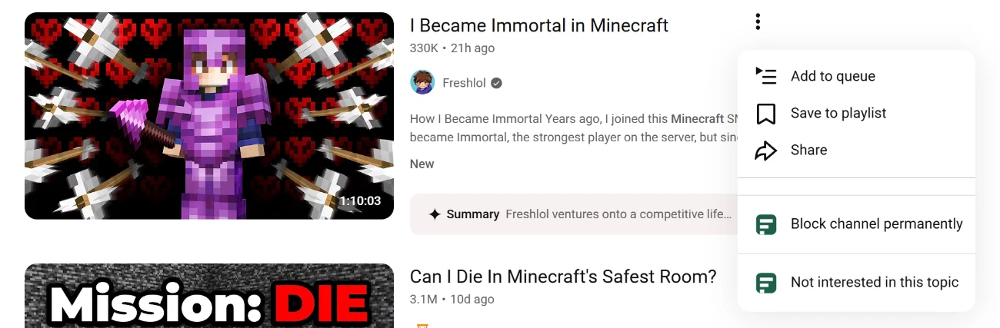
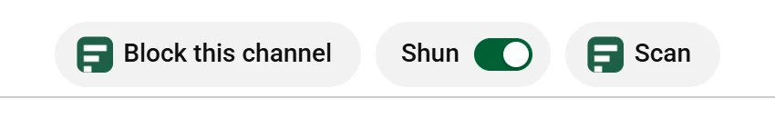

Short answer“Don't recommend channel” isn't a block. It's feedback that YouTube uses to tune your recommendations, it only counts for the account you were signed in with, and YouTube's help page doesn't say it applies to search. To hide a channel's videos on Home, search and Up next, you need a browser extension. Shun does it from the same 3-dot menu, with “Block channel permanently”.
What “Don't recommend channel” really does
YouTube lists it with its other recommendation controls. Its help page puts it this way: your feedback “helps us improve your YouTube experience in the future”. In practice that means:
- It's a signal, not a filter. YouTube doesn't publish how much weight it gives the signal, or for how long.
- It's about recommendations. The help page doesn't say it removes a channel from search results, and search is where many people keep seeing the channel.
- It's tied to your Google account. Signed out, in another browser profile, or on a second account, it doesn't apply.
- It can be undone without you noticing. It's stored as “Not interested” feedback in My Activity. Deleting that feedback, on purpose or while clearing activity, wipes it.
People have reported channels returning after using it for years. In March 2023 YouTube's support team said it was looking into those reports (PiunikaWeb). Some users simply call the button a placebo.
Why a channel you hid keeps coming back
YouTube doesn't explain individual recommendations, so these are the usual explanations, not a diagnosis:
- You're looking at search. Search results aren't recommendations, and the help page doesn't say the button covers them.
- You weren't signed in, or you were on a different account or device when you clicked it.
- The feedback was deleted in My Activity, under “Other Google activity”.
- It's a different channel. Re-uploads, clips channels and collaboration uploads can carry the same content under another name.
- It's still a recommendation system. Feedback adjusts what YouTube suggests. It isn't described anywhere as a promise to never show a channel again.
What you can do on YouTube itself
None of these is a block, but together they do change what YouTube suggests. They're free and work on every device where you're signed in.
If you're done with a channel, using “Don't recommend channel” is still worth it: it's what tells YouTube itself. A blocker hides what YouTube shows; it doesn't change what YouTube decides to show.
Block a channel once with Shun
Shun is a Chrome extension for computers. It keeps a list of blocked channels in your browser and hides their videos as YouTube's pages load, so a blocked channel stays hidden on Home, search and Up next, whatever YouTube decides to recommend. Channel blocking is free and unlimited, and there's no account.
-
Add Shun to Chrome
Open Shun on the Chrome Web Store and click Add to Chrome. It starts working in the YouTube tabs you already have open.
-
Open the 3-dot menu on one of the channel's videos
On Home, in search or in Up next. Shun adds “Block channel permanently” under YouTube's own items. When you're signed in, it sits right after “Don't recommend channel”, so you can click both.

Signed out, YouTube's menu is shorter, as here. Shun's two items are the last ones. -
Click “Block channel permanently”
The channel's videos disappear at once, on this page and in every other open YouTube tab. A message at the bottom of the page confirms which channel you blocked.
-
Or use the Block this channel button
On a video's watch page, “Block this channel” sits next to Subscribe. On a channel page it's at the end of the tab row.

On a channel page: Block this channel, a switch to show the channel on this page only, and Scan.
After that, the channel's videos stay hidden on Home, in search (its channel card too), in Up next, on channel pages, in playlists and in the Shorts player. Shun matches the channel by name and, in search results and playlists, also by @handle, which helps when a channel is renamed. To unblock, open Shun's popup, go to Blocked and click the × next to the channel. The full channel-blocking guide has more detail.
What Shun can't do
- It doesn't touch your Subscriptions feed. By design: you chose those channels, so blocks never apply there.
- It doesn't train YouTube. Shun sends nothing to YouTube, so YouTube may keep recommending the channel while Shun keeps hiding it.
- Direct links still play. A video someone sends you opens normally.
- Autoplay and end screens aren't changed. YouTube can still autoplay or suggest a blocked channel's video at the end of another one.
- Desktop Chrome only. It can't change the YouTube app on phones, tablets or TVs.
- A different channel is a different channel. Re-uploads under another name need their own block. Keywords and topics can catch those by title; free has 3 slots shared by keywords and topics.
- YouTube changes its pages often. When it does, something can slip through until Shun is updated. Report it from Shun's Settings or email Shun support (factuallogic98@gmail.com).
Questions
Does “Don't recommend channel” block a YouTube channel?
No. It's feedback that YouTube uses to tune your recommendations. YouTube's help page describes it as a recommendation setting and doesn't say it removes the channel from search, and it only applies to the Google account you were signed in with.
Why does YouTube keep recommending a channel I said not to recommend?
YouTube doesn't publish how strongly it weighs this feedback. Common reasons a channel shows up again: you were signed out or on another account, the feedback was deleted in My Activity, you're looking at search results rather than recommendations, or the video comes from a different channel, such as a re-upload or a collaboration.
How do I permanently block a YouTube channel on a computer?
YouTube has no setting that hides a channel's videos from you on the main site. In Chrome on a computer, a browser extension can: with Shun, click a video's 3-dot menu and pick Block channel permanently, and the channel's videos are hidden on Home, search and Up next. Channel blocking is free and unlimited.
Does blocking a channel with Shun work in the YouTube app?
No. Shun is a Chrome extension for youtube.com on a computer. It can't change the YouTube app on phones, tablets or TVs, and by design it never hides anything in your Subscriptions feed.
Block it once. It stays gone.
Free, unlimited channel blocking, no account. It works in the YouTube tabs you already have open.
Add to Chrome, it's freeSources
- YouTube Help, Manage your recommendations & search results (checked November 23, 2026)
- PiunikaWeb, YouTube “Don't recommend channel” or “Block user” not working, March 29, 2023